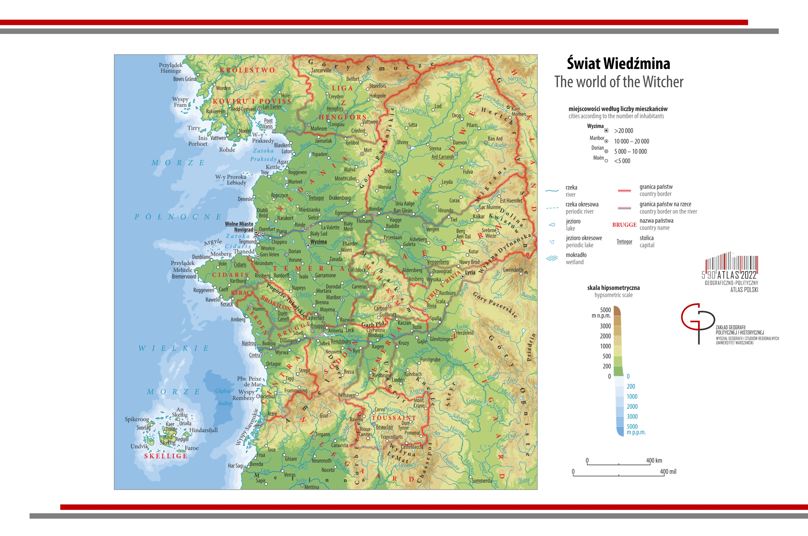
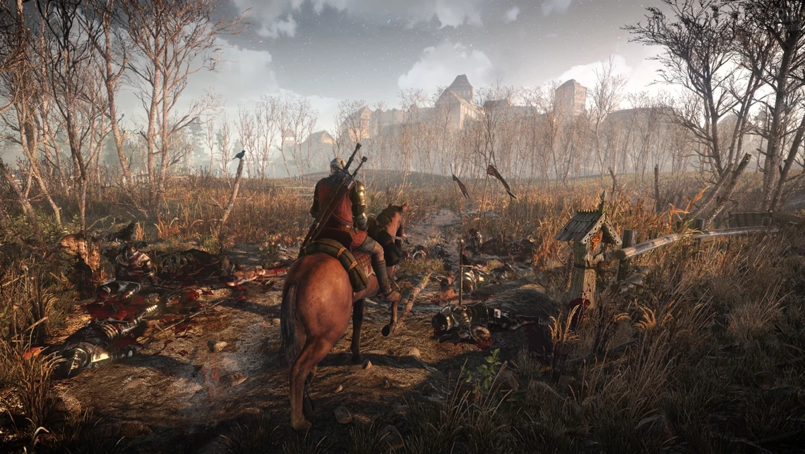
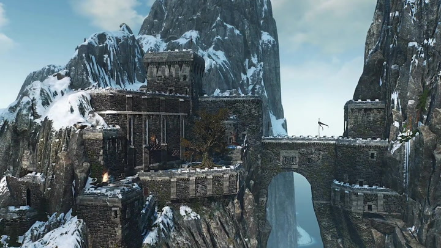

Explore the vast and mysterious world of The Witcher with this interactive map: The Witcher Interactive Map
| Novigrad | A bustling city in the Northern Kingdoms | |
| Velen | A war-ravaged region known for its dark secrets |  |
| Skellige Islands | Rugged and independent islanders' territory |  |
Before the First Landing, Novigrad was a small elven settlement. When the first human ships arrived in the Pontar Delta, the city was abandoned. It quickly became the capital of a new country created by king Sambuk, the ancestor of the first king of Redania.
The land of Velen, located in western Temeria with its capital in Gors Velen, is one of the poorest provinces in the kingdom. Its territory encompasses the isle of Thanedd, home to the famous magic academy, which, along with Gors Velen, constitutes the commercial and developmental mainspring of the entire province.
Before the first appearance of a human, the isles were apparently inhabited and dominated by Aen Seidhe elves who shared it with giants and ice giants.
The Witcher has a lot of interesting places based on the book series by Andrzej Sapkowski.